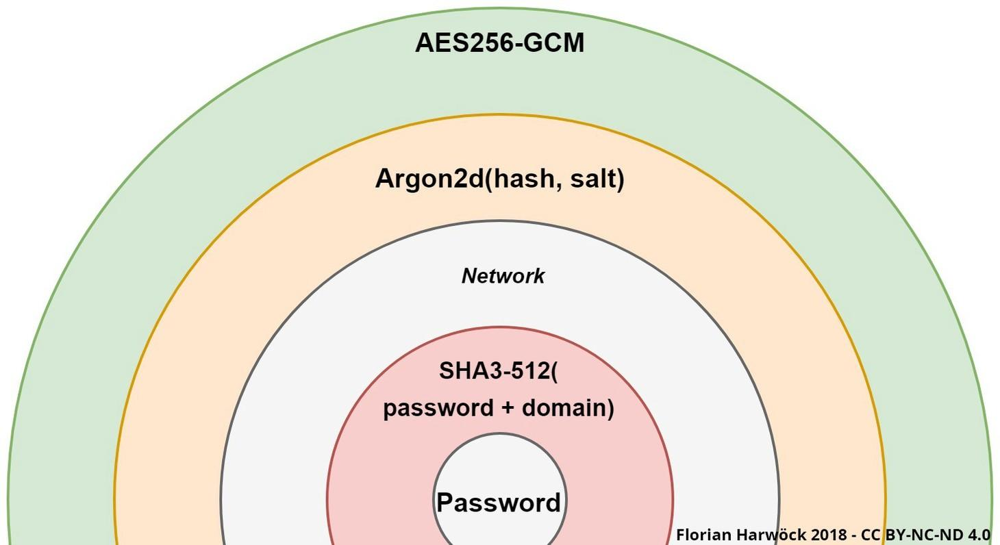

Hello World
CodeTengu Weekly 碼天狗週刊
如果命運的齒輪沒有出差錯，CodeTengu Weekly 會在 UTC+8 時區的每個禮拜一 AM 10:00 出刊。每週會由三位 curator 負責當期的內容，每個 curator 有各自擅長的領域，如果你在這一期沒有看到感興趣的東西，可能下一期就有了。當然你也可以瀏覽一下前幾期的內容。或是關注我們的 Facebook、Twitter、GitHub。有任何建議也歡迎來 Gitter 聊聊。
目前的 curator 陣容：
- @vinta - I failed the Turing Test - 科幻迷，最近在玩蜘蛛人
- @saiday - Imnotyourson - 有什麼意見進來 Runtime 講啊
- @tzangms - Oceanic / 人生海海 - 最近真的都在玩薩爾達
- @fukuball - ImFukuball - 有新工作了，但歡迎直接挖角
- @mingderwang - Ethereum enthusiast，最近在研究區塊鏈遊戲
- @kako0507 - 熱愛嘗試新事物的前端工程師
- @chiahsien - 我們公司在徵人
- @uranusjr - Smaller Things - Pinkoi 少了個棒球記者現在去應徵前端應該有機會
- @kkdai - 態度萬歲 - Learning Deeply....
- @yhsiang - AMIS / MAICOIN 徵才中，歡迎聯繫！
- @johnlinvc - 挑戰自動化家中電器
- @drumrick - 歡迎加入台灣 Kaggle 交流區
- @wancw
- @allanlei
- @theJian
- @lucienlee - 🦌
 @saiday
@saiday

Password and Credential Management in 2018 🔒
If a database leak happens, we don’t want the attacker …
… to somehow regain access to our user’s plain text password
… to be able to use the credentials to authenticate against the service
這篇文章就是在講密碼跟 credentials 的處理跟保存。
有個細節很有趣，如果是給用戶保存的 credentials (recovery code)，作者建議用 base32 來 encode 過再切成字段，這樣在抄寫或紀錄過程比較不會出錯。
What is the XY problem? How do I avoid it?
XY 問題：
- 遇到了一個問題 X，不知道怎麼解決
- 想試著用 Y 方法來解決 X 問題，同樣地，也不知道怎麼實作 Y 方法
- 向其他人提問 Y 方法要怎麼執行，並沒有提到問題 X
可能在大家花了很多時間討論 Y 方法之後，這並不能解決問題 X，或其實存在著更好的方法。
如果你是提問的人，無論有多確定問題的價值都應該提供想問這個問題的原因。如果你是被提問的人，只要你感覺到這可能是 XY 問題，你就應該問「為什麼要用方法 Y？」
RxJava 沉思录（一）：你认为 RxJava 真的好用吗？
Android 開發者都或多或少用過 RxJava 這個框架，這是一系列有思考含量的文章，值得一讀。
大多数我看到的有关 RxJava 的技术文章举例说明的所谓 “逻辑简洁” 或者是 “随着程序逻辑的复杂性提高，依然能够保持简洁” 的例子大多数都是不恰当的。一方面他们仅仅停留在 Callback 的维度，举那种依次执行的异步任务的例子，完全没有点到 RxJava 对处理问题的维度的提升这一点；二是举的那些例子实在难以令人信服，至少我并没有觉得那些例子用了 RxJava 相比 Callback 有多么大的提升。
我對 RxJava 的理解就是 Event driven。非同步、線程管理、Rx Operators 都是為了搭建 Event driven framework 而生。用 Observable 對事件做封裝，有了統一的介面，我們就可以對事件做加工或清洗（業務邏輯），然後得到結果。
延伸：Introducing MvRx: Android on Autopilot
Airbnb 釋出內部搭建在 RxJava 上的 Android 基礎架構，Kotlin only
 @fukuball
@fukuball
Ethereum 開發筆記
Blockchain、Ethereum：初級
之前一直有在關注 Blockchain、Ethereum，寫過 Smart Contract 也寫過 Dapp，但邊看網路上散落的文章邊學習總有些見樹不見林之感，狠下心來決定從頭到尾來把 Ethereum 開發摸一遍，順便將自己學習到的記錄下來寫成筆記，之後會陸續發佈新內容，大家跟我一起來受苦吧！
區塊鏈乾貨 Samson's Blog
Blockchain：初級
這幾天查 Blockchain 相關資料看到的部落格，滿滿 Blockchain 相關乾貨，蠻值得一看的！尤其作者用詞精準且嚴謹，這讓閱讀的人可以更容易釐清文章所要傳達的知識，這樣的寫作態度令人佩服也值得學習，相比之下我用詞就有點太不嚴謹了，總之，分享給大家！
 @mingderwang
@mingderwang
Kubernetes Ingress 101: NodePort, Load Balancers, and Ingress Controllers
如果你想當一個 DevOps 工程師，少不了自己裝一個 k8s，來實驗自動部署的環境。不管你是用 AWS、GCP、或是 Azure，甚至其他雲端或本地架設主機，都少了要自己決定怎麼部署你的 ingress。所謂 k8s ingress 就是外面進來的請求，要怎麼 routing 到 k8s 裡正確的 services。其實方法很多種，本文介紹你如何挑選。
The Rise of Cloud Native Programming Languages
市面上已經有那麼多種電腦語言，為何還要學 cloud native 程式語言呢？這跟我説會 VM 就好，為何還要學 docker 是一樣的道理。對 DevOps 團隊來説，如果能簡單的再把程式跟架構結合在一起，還能同時對架構做測試，cloud native 也許是個可行的方法。
Packaging Applications for Docker and Kubernetes: Metaparticle vs Pulumi vs Ballerina
有興趣對 cloud native 語言寫法一窺究竟的人，可以看這篇文章。它簡單地利用 hello world 範例來展示如何利用 Metaparticle、Ballerina、或 Pulumi 包裝的應用程式，能直接在 kubernetes 裡執行。